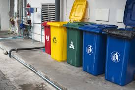
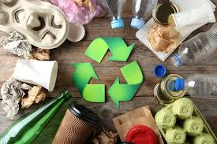
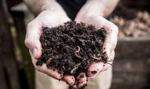
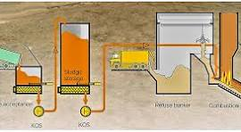
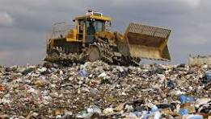

♻️ 1. Waste Segregation
Waste segregation is the process of separating waste into different categories such as biodegradable, non-biodegradable, and hazardous waste at the source. It helps in easy recycling and reduces environmental pollution.
🌍 Empowering Citizens through Digital Waste Management Training & Awareness ♻️
Waste management is a systematic process of collecting, segregating, treating, and disposing of waste materials in an efficient and eco-friendly manner. With increasing population and urbanization, proper waste management has become essential for maintaining environmental balance and public health.
Food scraps, vegetable peels, fruit waste, leftover food, garden waste, dry leaves, paper napkins, and organic matter.
Plastic bottles, polythene bags, metal cans, glass items, packaging materials, synthetic fabrics, and thermocol.
Chemical waste, batteries, medical waste, pesticides, expired medicines, cleaning acids, and industrial waste.
Old mobile phones, computers, laptops, chargers, cables, televisions, electronic circuits, and appliances

Waste segregation is the process of separating waste into different categories such as biodegradable, non-biodegradable, and hazardous waste at the source. It helps in easy recycling and reduces environmental pollution.

Recycling involves converting waste materials into reusable products. Items like paper, plastic, and metals can be recycled to conserve natural resources and reduce landfill waste.

Composting is a natural process of converting organic waste into nutrient-rich fertilizer. It is commonly used for biodegradable waste like food and garden waste.

Incineration is the controlled burning of waste materials at high temperatures. It reduces the volume of waste and can also generate energy in some cases.

Landfills are designated areas where waste is safely buried. Modern landfills are designed to minimize environmental impact and prevent leakage of harmful substances.
👉 Watch the following video to understand practical waste management methods and their real-life implementation in detail.